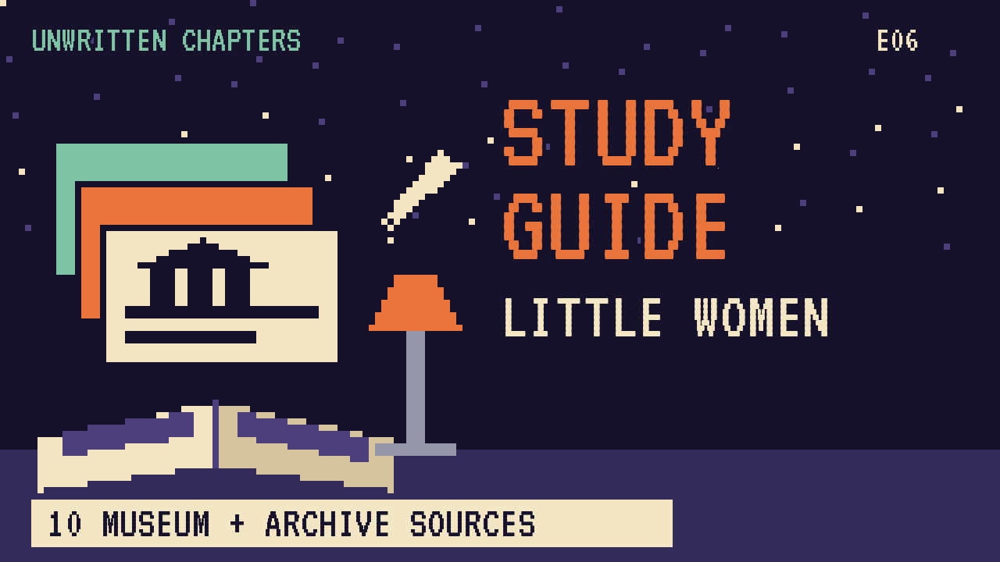

When Laurie asks Jo March to marry him, she says no, and readers have argued about it ever since. This guide covers the novel and a version where Jo says yes and keeps her freedom.
The four March sisters, Meg, Jo, Beth and Amy, live with their mother, Marmee, while their father serves in the Civil War. They're poor, but their home is full of love, plays and writing. Next door lives Laurie, a lonely rich boy who becomes their best friend.
Jo wants to be a writer and hates the idea of giving up her freedom. As they grow up, Meg marries, Beth falls ill, and Jo goes to New York to work and write. There she meets Professor Bhaer.
When Laurie proposes, Jo tells him she can't love him that way. He later marries Amy, Beth dies, and Jo marries the professor. They open a school at Plumfield.
"I've loved you ever since I've known you, Jo; couldn't help it, you've been so good to me."Little Women, Part Second, "Heartache"
In plain words: Laurie's proposal by the river.
"I don't believe I shall ever marry. I'm happy as I am, and love my liberty too well to be in a hurry to give it up for any mortal man."Little Women, Part Second
In plain words: Jo's view of marriage.
| Word | Meaning |
|---|---|
| garret | a small room at the top of a house, under the roof |
| liberty | freedom to live your own way |
| sensational | shocking, written to thrill |
| apprentice | someone learning a trade from a master |
"Jo Says Yes"
In our story, Jo says yes under the willow by the river. Their marriage has quarrels, but they stay best friends.
Laurie protects her writing time, turns down his grandfather's business to study music, and tells her to write "the true one" instead of the thrilling stories editors want. Jo writes about four sisters, and it's a success. She learns that marriage doesn't have to cost her liberty.
| # | Source | Type | Why it's useful |
|---|---|---|---|
| 1 | Louisa May Alcott's Orchard House | HISTORIC SITE | The home where Alcott wrote Little Women. |
| 2 | Orchard House "Digital Discoveries" | DIGITAL TOUR | Online programs and virtual looks inside the house. |
| 3 | Houghton Library, Harvard | ARCHIVE | Home of the Alcott family papers and letters. |
| 4 | Concord Museum | MUSEUM | Objects from the Concord of the Alcotts, Emerson and Thoreau. |
| 5 | Fruitlands Museum | HISTORIC SITE | The farm where the Alcott family once tried an ideal community. |
| 6 | Massachusetts Historical Society | ARCHIVE | Letters, diaries and photos of 19th-century Massachusetts. |
| 7 | Library of Congress Civil War photographs | PRIMARY SOURCE | Images of the war Mr March went away to. |
| 8 | 1868 first edition scans | FIRST EDITION | The book as first printed, with May Alcott's drawings. |
| 9 | LibriVox audiobook | AUDIO | Free volunteer readings. |
| 10 | Little Women (free text) | FREE TEXT | The complete novel, both parts. |